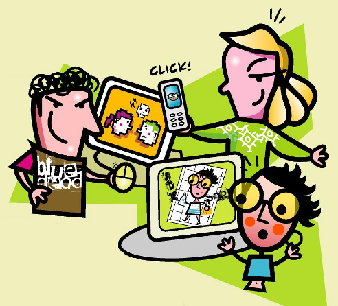

Ciberbullying
Pero,
¿Qué no es el ciberbullying?
Algunas formas que adopta
-
Colgar en Internet una imagen comprometida (real o efectuada mediante fotomontajes) datos delicados, entre otras.
-
Dar de alta, con foto incluida, a la víctima en un web donde se trata de votar a la persona más fea, a la menos inteligente.
-
Enviar menajes amenazantes por e-mail o SMS, perseguir y acechar a la víctima en los lugares de Internet en los se relaciona de manera habitual provocándole una sensación de completo agobio.
Un ejemplo mas claro
Uno más
En definitiva estamos ante un caso de ciberbullying cuando...
Consejos básicos contra el
-
No contestes a las provocaciones, ignóralas. Cuenta hasta cien y piensa en otra cosa.
-
Compórtate con educación en la Red.
-
Si te acosan, guarda las pruebas.
-
Si te molestan, abandona la conexión y pide ayuda.
-
Si hay amenazas graves pide ayuda con urgencia.
Otros más
Nota:
Los menores que acosan a otros en la Red tienen el doble de probabilidades de sufrir también ellos el ciberbullying
Según estudio, en españa:
-
37% de los jóvenes españoles que son ciberacosados.
-
17% admite recibir un trato poco amistoso.
-
13% ser objeto de burlas.
-
19% ser insultado.